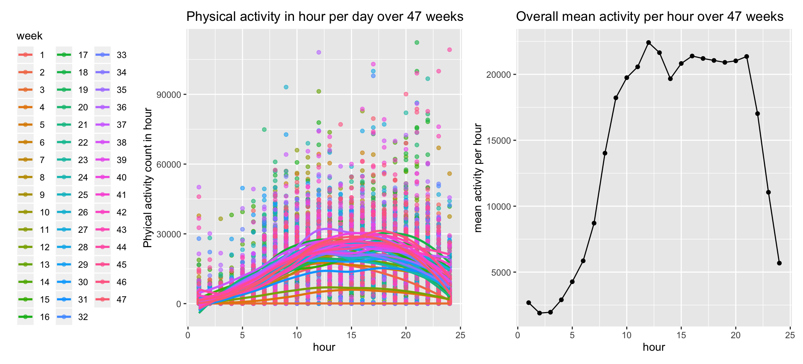
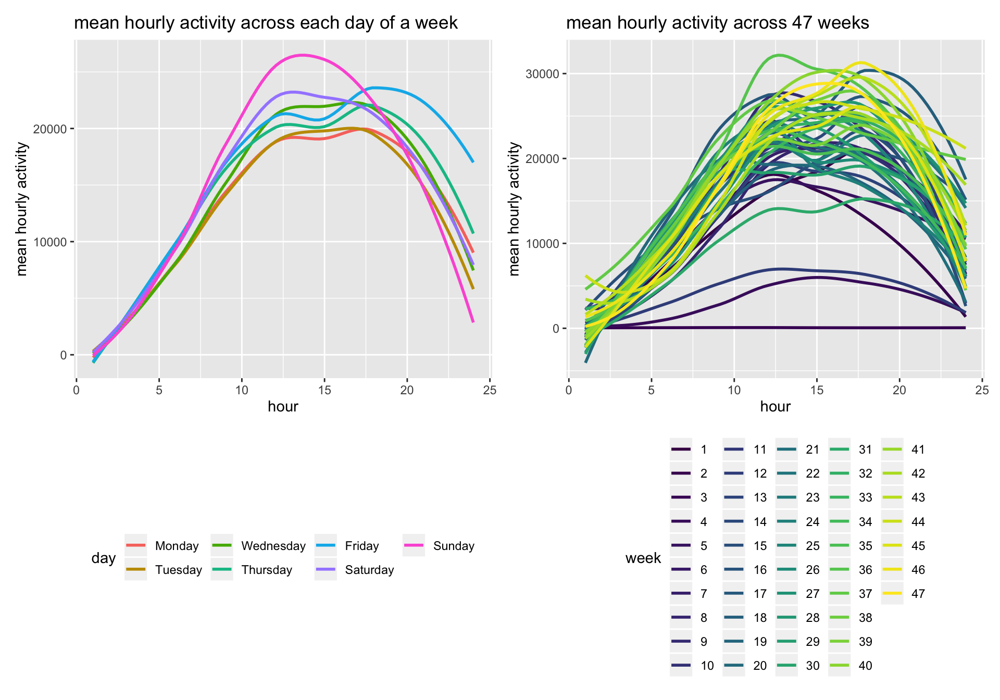

Physical Activity from Accelerometer Device
Eleanor Zhang
2018-10-26
Objective
We examined the physical activity counts from accelerometer device for months on a 63 year-old male diagnosed with congestive heart failure (CHF). We aimed to unveil and compare the pattern of physical activity of the patient before and after this clinical event.
Data overview
meter_data <-
read_csv("./data/p8105_mtp_data.csv") %>%
janitor::clean_names() %>%
mutate(day = forcats::fct_relevel(day, c("Monday", "Tuesday", "Wednesday", "Thursday", "Friday", "Saturday", "Sunday"))) %>% # put day in factors
arrange(week, day) %>%
mutate(day_index = 1:nrow(.)) %>% # add day index for the convenience of refering to each day
select(day_index, week, day, everything())
# tidy data transforming to long format
meter_data_tidy <-
meter_data %>%
gather(key = minutes, value = activity_count, activity_1:activity_1440) %>% # treat minutes as characters
mutate(minutes = str_replace(minutes, "activity_", "")) %>% # remove strings in the minutes variable
arrange(day_index)This dataset contains around-clock 1440 minutes count for physical activity over 329 days (47 weeks). First, we lookede at the distribution of physical activity counts by dividing the count data into quartiles and deciles .Both the quartile cutoff and the mean value of each decile group indicate the activity level “1” is the most common value because 1 is default value at sedentary or during sleep. More counts mean the individual is more active. Many values towards the far end at top 10% of the data may be outliers but need further investigations.
# five number summary (quartiles)
summary(meter_data_tidy$activity_count)
## Min. 1st Qu. Median Mean 3rd Qu. Max.
## 1.0 1.0 43.0 240.3 335.0 10417.0
# deciles
meter_data_tidy %>%
group_by(quartile = ntile(activity_count, 10)) %>% # order and divide activity count into 10 equal bins
summarize(mean_count = mean(activity_count)) %>% # calculate the mean value in each bin
spread(key = quartile, value = mean_count) %>%
knitr::kable()| 1 | 2 | 3 | 4 | 5 | 6 | 7 | 8 | 9 | 10 |
|---|---|---|---|---|---|---|---|---|---|
| 1 | 1 | 1 | 1 | 14.49948 | 77.39596 | 184.5814 | 339.6358 | 580.0541 | 1203.203 |
Explore the daily total physical activity counts
We did visual analysis of total daily activity over time. To examine if the this person become more active over time, we visualized the daily activity counts by each day. On the day-by-day level, the daily physical activity increased over time because of the positive slope of regression line.
meter_data <-
meter_data %>%
mutate(total_daily_activity = rowSums(.[4:1443])) %>%
select(day_index, week, day, total_daily_activity, everything())
# tidy data with total daily activity
meter_data_tidy2 <- meter_data %>%
gather(key = minutes, value = activity_count, activity_1:activity_1440) %>%
mutate(minutes = str_replace(minutes, "activity_", "")) %>%
arrange(day_index)
# plot by day
meter_data %>%
ggplot(aes(x = day_index, y = total_daily_activity)) + geom_point() +
geom_smooth(method = lm, se = F) +
labs(x = "day",
y = "daily activity",
title = "scatterplot of total daily activity over days")
Then we can examine the possibility that day of the week affects activity:
meter_data %>%
group_by(day) %>%
summarize(day_average = mean(total_daily_activity)) %>% # average daily total across weeks on each weekday
mutate(day = forcats::fct_reorder(day, day_average)) %>%
ggplot(aes(x = day, y = day_average, fill = day)) + geom_bar(stat = 'identity') +
labs(y = "mean daily total activity", title = "mean daily total activity on each day of a week")
In isolation to the effect of time, the day of the week may be associated with the total daily activity because the mean daily total activity is higher towards the weekends. The daily activity generally peaks on Fridays compared to the other days.
The day of week also affects total daily activity in addition to the effect of time (over weeks): over the 47 weeks, there is a smooth increase of activity level on each day of week but significantly more active on Saturdays around 30 to 35 weeks as shown following.
meter_data %>%
ggplot(aes(x = week, y = total_daily_activity, color = day)) + geom_point() + geom_smooth(se = F) +
labs(y = "daily activity count",
title = "daily total activity count on each day of week across 47 weeks") +
theme_classic() +
theme(legend.position = "bottom")
## `geom_smooth()` using method = 'loess' and formula 'y ~ x'
Examine activities over the course a day
Now we are interested in how the pattern of patient’s activity level change over time in order to keep track of his physical status prior and after heart failure event. So we will dive into the 24-hour activity profiles for each day.
meter_data_tidy_hour <- meter_data_tidy %>%
mutate(minutes = as.numeric(minutes)) %>%
mutate(hour = minutes %/% 60 + minutes %% 60 /60) %>%
mutate(hour = ifelse(hour %/% 1 != 0, hour + 1, hour),
hour = floor(hour)) %>%
mutate(hour = ifelse(hour < 2, hour + 1, hour),
hour = ifelse(hour == 25, 24, hour))
profile_fullset <- meter_data_tidy_hour %>%
mutate(week = as.factor(week)) %>%
group_by(week, day, hour) %>%
summarize(hour_total = sum(activity_count)) %>%
ggplot(aes(x = hour, y = hour_total, color = week)) +
geom_point(alpha = 0.6) + geom_smooth(se = F, alpha = 0.3) +
theme(legend.position = "left") +
labs(y = "Phyical activity count in hour",
title = "Physical activity in hour per day over 47 weeks")
average_day_activity <- meter_data_tidy_hour %>%
group_by(week, day, hour) %>%
mutate(hour_sum = sum(activity_count)) %>%
group_by(hour) %>%
summarize(mean_hour = mean(hour_sum)) %>%
ggplot(aes(x = hour, y = mean_hour)) + geom_point() + geom_line()+
labs(y = "mean activity per hour",
title = "Overall mean activity per hour over 47 weeks")
profile_fullset + average_day_activity
## `geom_smooth()` using method = 'loess' and formula 'y ~ x'
The left figure depicts a 24 hour activity profile of the patient for each day. The right figure used average values to capture a typical daily living activity of the patient regardless of behavioral change overtime. He slept through the midnight and got up around 7 to 8 am. He was physically active during the day from 10 am to 8 pm. It is consistent with the smooth curves in lower panel of the left figure since the other points in far distance of these general trends may be outliers.
Lastly, the daily activity pattern also varied across different days of a week and over time:
# day effect
day_effect <- meter_data_tidy_hour %>%
group_by(week, day, hour) %>%
summarize(hour_total = sum(activity_count)) %>%
group_by(day, hour) %>%
summarize(day_mean_hour = mean(hour_total)) %>%
ggplot(aes(x = hour, y = day_mean_hour, color = day)) + geom_smooth(se = F) +
theme(legend.position = "bottom") +
labs(y = "mean hourly activity", title = "mean hourly activity across each day of a week")
# time effect
meter_data_tidy_hour$week <- as.factor(meter_data_tidy_hour$week)
time_effect <- meter_data_tidy_hour %>%
group_by(week, day, hour) %>%
summarize(hour_total = sum(activity_count)) %>%
group_by(week, hour) %>%
summarize(hour_mean = mean(hour_total)) %>%
ggplot(aes(x = hour, y = hour_mean, color = week)) + geom_smooth(se = F, alpha = 0.5) +
labs(y = "mean hourly activity",
title = "mean hourly activity across 47 weeks") +
viridis::scale_color_viridis(
name = "week",
discrete = TRUE
) +
theme(legend.position = "bottom")
day_effect + time_effect
The patient was more active from 10am to 8pm on Sundays and became more active during dinner time on most of the days of the week. The right figure demonstrates the patient became more active during hours in a day over 47 weeks.